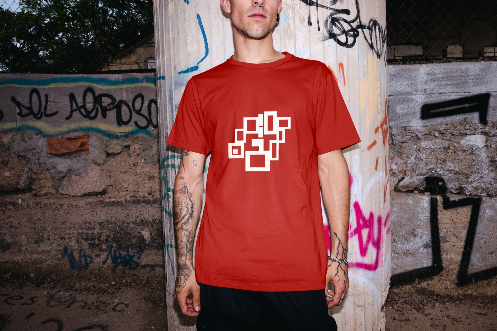
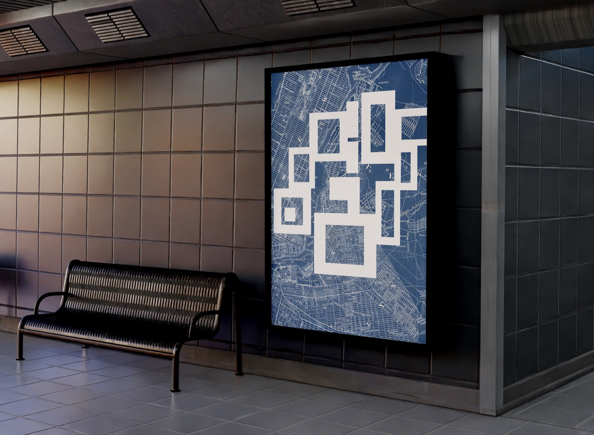
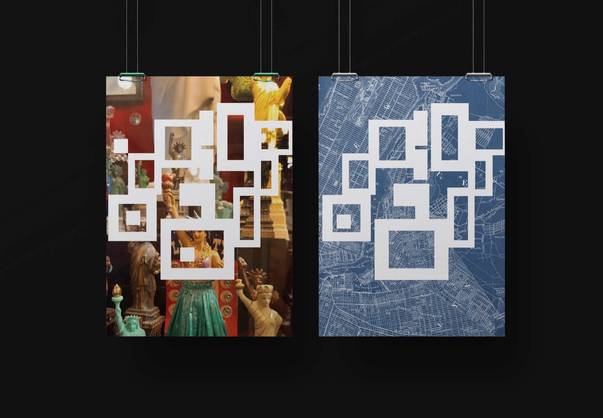

Case study · Branding · 2026
Brand Identity
City Reliquary is a community-driven museum devoted to preserving New York City's history through everyday objects and personal collections. Unlike traditional museums that focus on grand historical narratives, City Reliquary highlights overlooked artifacts, neighborhood stories, and urban ephemera.

Overview
Challenge
City Reliquary is a community-driven museum devoted to preserving New York City's history through everyday objects and personal collections. Unlike traditional museums that focus on grand historical narratives, City Reliquary highlights overlooked artifacts, neighborhood stories, and urban ephemera.
Solution
I developed a compact CR mark that uses negative space to suggest a curated fragment, then extended the identity across posters, signage, and merchandise.
Outcome
The identity gives the museum a flexible visual system rooted in everyday artifacts and neighborhood history, with applications that work across print, display, and apparel.

03 — Mockups

